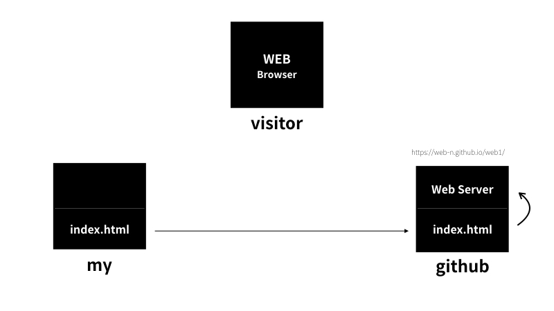
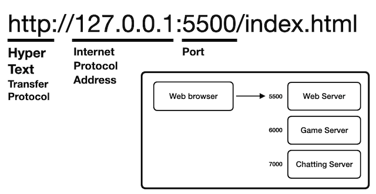

Hypertext Markup Language의 줄임말.
웹페이지를 구성하는 요소로서 쓰인다.
HTML은 JavaScript와 같이 순차적으로 동작하질 않으므로 프로그래밍 언어라고 하지는 않는다.
올바른 태그를 사용하는게 중요한 이유
HTML5에서 부터는 브라우저가 태그를 통해 HTML에서 어떤 부분이 무슨 역할을 하는지 인식하기 떄문에 적절한 태그를 이용하는 것이 중요하다.
이 의미는 아마 검색과 같은 기능에서도 중요하게 작동한다라는 뜻인 것 같다.
한글이 깨지는 것에 대하여.
한글이 깨지는 경우는 웹페이지가 저장한 문자표현 방식과 웹페이지를 불러올때의 문자표현 방식이 다르기 떄문이다.
웹페이지를 저장할 때 UTF-8로 저장되었했다면
웹페이지를 불러올 때도 UTF-8로 불러와야 한다.
아래와 같이 UTF-8로 불러오도록 설정할 수 있다.
<meta charset="utf-8">
작성규칙에 대하여
태그는 소문자로, 속성은 큰따옴표("") 안에 쓰는 것이 좋다.
element에 대하여
element(엘리먼트) = tag(태그) 라고 이해하면 된다.
주석
웹페이지에서는 보이지 않지만, 소스상에서는 보인다.
아래와 같이 사용한다.
<!-- 주석내용 -->
제목 관련
h태그를 사용. header의 줄임말.
body 태그 안에서 쓰이며 제목을 표시하는 태그이다.
h1
<h1>h1</h1>
h2
<h2>h2</h2>
h3
<h3>h3</h3>
h4
<h4>h4</h4>
h5
<h5>h5</h5>
h6
<h6>h6</h6>
문단 관련
p태그를 사용. Paragraph의 줄임말.
문단을 표현할떄는 p를 쓰는데 일반적으로 br보다는 적게 쓰인다.
하지만 p태그는 css적용이 가능하지만 br태그는 css적용이 불가능하기에 용도에 따라 쓸 필요가 있다.
아래에서 쓰일 style과 같은 것을 CSS이며, 그 중에서도 inline-style이라고 부른다.
<p style="margin-top:45px;">단락은 p</p>
줄관련
br태그. Break의 줄임말.
대부분의 태그는 컨텐츠에 적용시키기 위해 감싸는 구조로 되어있지만
br, img, input, hr, meta 등은 컨텐츠에 적용시킨다는 개념이 아니기에 감싸지 않는다.
줄바꿈은<br>br
hr태그.Horizontal Rule의 줄임말.
줄바꿈과 동시에 가로줄이 생긴다.
콘테츠 내용에서 주제가 바뀔 때 사용한다고 한다.
줄바꿈+가로줄은<hr>hr
서식 관련
강조 strong = 브라우저에서 진짜 강조 의미로 인식 b = bold의 줄임말. 디자인적으로 글자 강조.
<strong>strong = 브라우저에서 진짜 강조의미로 인식</strong>
<b>b = bold의 줄임말. 디자인적으로 글자 강조.</b>
기울임 em = emphasize의 줄임말. 브라우저에서 진짜 기울임 의미로 인식 i = italic의 줄임말. 디자인적으로 기울임.
<em>em = emphasize의 줄임말. 브라우저에서 진짜 기울임 의미로 인식</em>
<i>i = italic의 줄임말. 디자인적으로 기울임.</i>
인용
blockquote = 인용문을 쓸 때 쓴다.
자동으로 들여쓰기가 적용된다.
q = quote의 줄임말. 자동으로 쌍따옴표("")가 적용된다.
blockquote 태그 안에 쓸 필요는 없다.
보통 누군가의 말을 인용할때 쓰는 듯 하다?
<blockquote>
blockquote = 인용문을 쓸 때 쓴다.<br>
자동으로 들여쓰기가 적용된다.<br>
<q>
q = quote의 줄임말. 자동으로 쌍따옴표("")가 적용된다.<br>
blockquote 태그 안에 쓸 필요는 없다.<br>
보통 누군가의 말을 인용할때 쓰는 듯 하다?
</q>
</blockquote>
출처
cite = 저작물의 출처를 표기할 때 사용
이 글은 이 곳에서 출처되었습니다. 출처명
<cite>출처명</cite>
첨자
sub = subscript의 줄임말. 아래첨자를 나타낼떄 사용. 1<sub>아래첨자</sub>
sup = superscript의 줄임말. 아래첨자를 나타낼떄 사용. 1<sup>윗첨자</sup>
기타
small = 덧붙이는 글이나, 저작권과 법률 표기 등의 작은 텍스트를 나타낼 때 사용.
비교를 위한 아무 태그 없는 글
<small>덧붙이는 글</small>
mark = 한 문서 내에서 관련성이 있는 특정 부분을 참조 목적으로 표시하거나 강조하는 텍스트 구간을 나타낼 떄 사용.
<mark>특정 부분을 참조 목적으로 표시하거나 강조</mark>
del = delete의 줄임말. 야호 삭제된 텍스트를 나타낼 떄 사용.
<del>야호</del>
ins = insert의 줄임말. 기존의변경된 텍스트를 나타내거나 특정 내용을 강조할 떄 사용.
<ins>변경된 텍스트를 나타내거나 특정 내용을 강조</ins>
address = 연락처 정보를 나타낼 때 사용. 010-1111-2222
추가적으로 가장 가까운 조상이 article 또는 body 태그일 경우 그 태그에 대한 연락처 정보를 나타내는데 사용하며
그 태그가 body인 경우 연락처 정보는 문서 전체에 적용된다... 라고는 하는데 무슨 말인지 이해가 잘 안간다.
<address>010-1111-2222</address>
abbr = abbreviation의 줄임말. 줄임말을 나타내는 태그이다.
이 태그는 title속성과 사용하거나 dfn 태그와 사용하는게 좋을 것 같다.
abbr
<abbr>줄임말</abbr>
pre = preformatted의 줄임말. 텍스트에 사용된 여백, 줄바꿈이 모두 노출되야 할 떄 사용.
xmp태그와는 달리 HTML코드를 텍스트로서 인식하지는 못한다.
여백을 한번 줘
봅시다 .
HTML코드를 pre안에서 쓰려면 code태그와 var태그, samp태그등을 써야하는데....
솔직히 굉장히 번거로워서 이걸 정말 쓸 일이 있을까 싶다.
<pre>
여백을 한번 줘
봅시다 .
</pre>
xmp = pre태그와 유사하지만 차이점은 HTML코드 또한 텍스트로서 인식한다는 것이다.
개인적으로 소스코드를 나타내는데 pre+code태그보다 유용하다고 생각하는데 어떠한 이유에선지
W3C는 xmp 코드 대신 pre 태그를 사용하라고 권했고
HTML 3.2에서 사용 중지를 예고한 태그이다.
아래와 같이 쓴다. (xmp태그 안에서 xmp태그 자체는 인식을 못하는 듯 하다.)
<head></head>
가급적 대체재를 찾아보는게 좋을 듯 하다.
kbd = keyboard의 줄임말. 입력장치의 어떤 걸 눌러야 하는지 설명할 떄 쓴다.
복사를 할때는 Ctrl + c 를 누르면 됩니다.
복사를 할때는 <kbd>Ctrl</kbd> + <kbd>c</kbd> 를 누르면 됩니다.
samp = sample의 줄임말. 어떤 기능의 결과물을 설명할 떄 쓰인다.
ex : 이 기능을 실행하면 alert 이 뜹니다.
ex : 이 기능을 실행하면 <samp>alert</samp> 이 뜹니다.
링크
a = Anchor의 줄임말.
클릭 시 다른 페이지로 이동시켜준다.
속성은 href, target, title이 있다.
href = Hypertext Refernce의 줄임말. 이동하고자 하는 경로 및 주소.
target = 새 창을 어디에 띄울건지. (ex: target="_blank"는 새창에서 웹 페이지 불러오기.)
title = 툴팁이다. HTML의 공식 사용설명서 페이지
<a href="https://www.w3.org/TR/html5/" target="_blank" title="오호?">HTML의 공식 사용설명서 페이지</a>
이미지
img = Image의 줄임말.
이미지를 표시하는 태그이다.
속성은 src, alt, width, height가 있다.
src = source의 줄임말. 이미지 파일의 경로를 지정할 때 쓴다.
alt가 = Alterate의 줄임말. 이미지 경로가 잘못되었거나 파일이 깨졌을 떄 나오는 대체 메세지 입력란.
width = 너비
height = 높이
src와 같은 것을 속성(attribute) 라고 한다.
테이블
table = 표를 표시하는 태그이다. 테이블 관련 태그 전체를 감싼다.
caption = 테이블의 제목
thead = 테이블의 첫 줄
tbody = 테이블의 중간
tfoot = 테이블의 마지막 줄
tr = 가로 한 줄
th = 제목 칸
td = 칸 하나
colspan = th, td에서만 사용 가능. 가로 병합이다.
rowspan = th, td에서만 사용 가능. 세로 병합이다.
※기본적으로 테두리(border)는 지원하지 않는 듯 하다.
※개인적으로 쓰기 굉장히 번거롭다. 다른 대체재가 있는지 찾아볼 법 하다.
※그냥 쓰게되면 border CSS를 걸었을떄 이상하게 노출된다. table 태그에 border-collapse : collapse; 가 필요하다.
순서가 없는 것
ul = Unordered Lists의 줄임말. li = Listed Item의 줄임말.
가급적 부모(ul)-자식(li)관계로 쓰여야 한다.
ul은 li들을 그룹짓게 하며 li는 각 항목을 나타내게 된다.
그룹1-1
그룹1-2
그룹2-1
그룹2-2
만약 ul을 안쓰고 li만 있다면 이렇게 된다.
그룹1-1
그룹1-2
그룹2-1
그룹2-2
<ul>
<li>그룹1-1</li>
<li>그룹1-2</li>
</ul>
<ul>
<li>그룹2-1</li>
<li>그룹2-2</li>
</ul>
순서가 있는 것
ol = Ordered List의 줄임말.
가급적 부모(ol)-자식(li)관계로 쓰여야 한다.
ol은 li에 순번을 노출시킬수 있게 해준다.
그룹1-1
그룹1-2
<ol>
<li>그룹1-1</li>
<li>그룹1-2</li>
</ol>
시맨틱 태그
div와 비슷하게 공간을 의미하는 태그이다.
일반적으로 div가 많이 쓰이는데, 문제는 div가 너무 많아지다 보니 각각의 div가 무슨 역할을 하는지 알기 힘들어지게 되었다.
그래서 명확한 역할을 지닌 시맨틱 태그가 생겨나게 되었다.
아래에 소개하는 부분들은 전부 body태그 안에 쓰인다.
body태그 안에서 각각의 영역을 지정해준다는 개념으로 생각하면 될 듯 하다.
header = 페이지 소개, 제목을 담당.
footer = 페이지 하단의 저작권 정보, 사이트 제공자 정보를 넣는 공간.
main = 몸통 부분. 한 페이지 당 하나만 써야하고, 다른 페이지와 겹치면 안된다.
nav = 내비게이션 바.
section = 구획. 공지사항 부분, 포스트 부분, 댓글 부분 등 구획을 의미한다.
article = 포스트 부분. article 태그 포함 안의 컨텐츠를 다른 페이지나 다른 사이트에 놓아도 내용이 말이 되야 한다.
즉, 하나의 완전한 영역이라고 보면 된다. section 태그 안에 쓰인다.
aside = 메인 내용과 간접적인 연관성이 있는 부분을 따로 분리하는 태그.
페이지에서 이전글, 다음글 등을 담당하는 태그이다.
이러한 시맨틱 태그들은 웹 접근성에는 어떤 영향을 미치는지는 잘 모르겠으나, 외관으로 보기에는 딱히 특별한 점은 없다.
현재로선 단순히 각 구역을 보다 의미있게 정리하기 위해 쓰인다 정도로만 인식하고 있다. LSJ의 Study Site
form = 클라이언트에서 서버로 정보를 보낼때 사용.
속성은 action, actocomplete, enctype, method, name, target, accept-charset가 있다.
action = 정보를 보낼 서버 주소를 입력하는 부분이다.
actocomplete = 양식의 자동완성을 지정하는 기능. on, off 두 가지 값만 허용한다. 디폴트는 on 이다.
전체에 적용하고 싶다면 form태그에 걸면되겠지만, input등 특정 요소에만 적용하는 것도 가능하다.
enctype = 컨텐츠 타입을 지정할 때 쓴다.
지정하지 않아도 기본값으로 application/x-www-form-urlencoded 를 쓴다. 이는 모든 문자들은 서버로 보내기 전에 인코딩 됨을 명시한다.
파일, 이미지를 보낼떄는 multipart/form-data라고 명시해줘야 한다.
또한 반드시 아래에서 서술할 method = post로 설정해야한다.
method = 데이터를 보내는 방식을 정할때 사용한다.
get과 post가 있으며 자세한 내용은 아래와 같다.
get = url뒤에 input박스의 내용이 key=value 형태로 변환되어 전송 된다.
ex: htmlStudy.html?id=asd&pw=ddd
위처럼 form에서 전송하는 데이터가 주소창에 그대로 노출되므로 보안에 취약하다.
딱히 보안이 필요없는 그런 데이터를 전달할때 쓴다.
post = get방식과는 다르게 서버에 전달한 데이터가 사용자에게 노출되지 않는다.
실무에서 굉장히 많이 쓰이는 방식이다.
name = form을 식별하기 위한 이름을 지정할 때 쓴다.
target = 데이터를 서버로 전달 후 받는 응답이 열릴 위치를 명시한다.
_blank, _self, _parent, _top, 프레임 이름이 있으며 자세한 내용은 아래와 같다.
_blank = 응답을 새로운 탭에서 보여준다.
_self = 기본값으로 생략이 가능하다. 응답을 링크가 현재 프레임에서 보여준다.
_parent = 응답을 링크가 현재 프레임의 부모 프레임에서 보여준다.
_top = 응답을 현재 윈도우 전체에서 보여준다.
프레임 이름 = 응답을 명시된 프레임에서 보여준다.
accept-charset = 데이터를 전송할 때 문자셋을 지정할 때 사용한다.
만약 브라우저 문자셋과 서버의 문자셋이 틀리면 글자가 깨지게 된다.
예를 들어 웹 페이지는 EUC-KR 이고 서버는 UTF-8이라 문제가 생긴다면 accept-charset으로 UTF-8을 세팅한 후 보내면 된다.
<form action="htmlStudy.html" method="get" target="_blank">
<input type="text" name="inputVal">
<input type="submit">
</form>
input
input = form에 전송한 정보를 입력할 떄 쓴다.
속성은 type, placeholder, name, value, id가 있다.
type = input이 어떤 형식의 정보를 받을지 정하는 부분이다.
type은 그 종류가 굉장히 많다. 대표적으로 쓰이는 것은 text, radio, checkbox, password, submit, reset가 있다.
일단 알고있는 모든 종류를 나열해보겠다.
text, email, date, time, datetime, password, number, range, search, url, week, month 가 있다.
이 중 radio의 경우 같이 사용할 radio 타입의 name은 서로 같아야 한다.
placeholder = inupt에 아무 값도 입력되지 않았을 때 나타나는 글을 입력하는 곳이다.
name = form을 전송했을 때 서버에서 받을 이름(Key)을 입력하는 곳이다.
value = form을 전송했을 때 서버에서 받을 값(value)을 입력하는 곳이다.
id = input의 유니크한 이름이다. 추후에 언급할 label과 연결할 값을 입력한다.
<form action="htmlStudy.html" method="get" target="_blank">
<input type="text" name="textType" value="textVal" placeholder="text타입입니다."><br>
<input type="radio" name="radioType" value="radio1Val" placeholder="radio타입은 어케 노출될까?">1번
<input type="radio" name="radioType" value="radio2Val" placeholder="radio타입은 어케 노출될까?">2번<br>
<!-- radio는 placeholder 무의미 -->
<input type="checkbox" name="checkboxType" value="checkboxVal" placeholder="checkbox타입입니다."><br>
<!-- checkbox는 placeholder 무의미 -->
<input type="password" name="passwordType" value="passwordVal" placeholder="password타입입니다."><br>
<input type="email" name="emailType" value="asd@asd.com" placeholder="email타입입니다."><br>
<!-- email의 경우 @가 입력되지 않으면 경고창이 뜬다. 또한 get방식의 경우 @가 %40로 치환되어 나타난다. -->
<input type="date" name="dateType" value="dateVal" placeholder="date타입입니다."><br>
<!-- date는 placeholder 무의미 -->
<input type="time" name="timeType" value="timeVal" placeholder="time타입입니다."><br>
<!-- time는 placeholder 무의미 -->|
<input type="datetime" name="datetimeType" value="datetimeVal" placeholder="datetime타입입니다."><br>
<input type="number" name="numberType" value="numberVal" placeholder="number타입입니다."><br>
<input type="range" name="rangeType" value="20" placeholder="range타입입니다."><br>
<input type="search" name="searchType" value="searchVal" placeholder="search타입입니다."><br>
<input type="url" name="urlType" value="http:/www.urlVal.com" placeholder="url타입입니다."><br>
<!-- url의 경우 http를 넣어야 인식이 되며, :// 부분은 %3A%2F%2F 로 치환된다. -->
<input type="week" name="weekType" value="weekVal" placeholder="week타입입니다."><br>
<!-- week는 placeholder 무의미 -->|
<input type="month" name="monthType" value="monthVal" placeholder="month타입입니다."><br>
<!-- month는 placeholder 무의미 -->|
<input type="submit">
<input type="reset">
<!-- 초기화를 누르면 소스상에 적혀있는 value값으로 돌아간다. -->|
</form>
select
select = 옵션으로 구성된 드롭다운 형식의 태그.
사용자가 원하는 옵션을 선택할 수 있게 할 때 사용한다.
속성은 id, name, required, multiple, disabled 등이 있다.
※autofocus, size 등의 속성도 있으나 호환성 문제도 있고 해서 따로 적지는 않겠다.
id = select태그의 유니크한 값. label태그와 연결할 때 사용하기도 한다.
name = form을 통해 데이터 전송 시 key값이 된다.
required = 필수로 옵션태그를 선택해야 함을 명시한다.
multiple = 옵션태그를 다중 선택할 수 있음을 명시한다.
disabled = select태그 자체를 비활성화 시킨다.
option = select 태그에 노출되는 옵션들.
속성은 value, selected, disabled 이 있다.
value = form을 통해 데이터 전송 시 value값이 된다.
selected = 페이지가 처음 로드될때 기본으로 서택되도록 한다.
disabled = 해당 옵션의 색상이 회색으로 변하며, 사용자가 선택 자체를 못하도록 비활성화 처리 된다.
optgroup = option태그를 감싸 하나의 그룹으로 만들 때 사용한다.
속성은 label이 있다.
label = 옵션 그룹의 이름을 지정할 때 쓴다.
<form action="htmlStudy.html" method="get" target="_blank">
<label for="noActive">비활성화 selectbox</label>
<select id="noActive" name="noActiveSelect" style="display: block;" disabled required>
<!-- select에 disabled 속성이 있으면 required 속성을 무시하며 form전송을 하더라도 해당 selectbox는 데이터 전송이 안된다. -->
<option value="asd" selected>테스트 종류를 선택해보세요.</option>
</select>
<label for="single">단일 선택</label>
<!-- label의 for와 select의 id가 일치한다면 label영역 클릭 시 select태그에 포커스가 간다. -->
<select id="single" name="singleSelect" style="display: block;" required>
<option value="" disabled selected>테스트 종류를 선택해보세요.</option>
<!--
select태그가 require속성을 지니고 있고
option태그의 value 값이 없고, disabled, selected 속성을 지니고 있으면
목록에서 항목을 선택하라는 창이 뜬다.
만약 option태그의 value 값이 있다면 그대로 인식을 한다.
또한 optgroup태그 안에 들어가 있는 상태면 value 값이 없어도 인식을 한다.
-->
<optgroup label="골라보세요~">
<option value=""></option>
<option value="값">값과 텍스트 있을때</option>
<option>value없음</option>
<option value="value만 있음"></option>
<option value="aaa" disabled>비활성화 처리</option>
<option value="bbb" style="display: none;">비노출 처리</option>
</optgroup>
<optgroup label="골라보세요2~">
<option value="">하나의 select에 optgroup 여러개 생성 가능</option>
</optgroup>
</select>
<label for="multi">다중 선택</label>
<select id="multi" name="multiSelect" multiple required style="display: block;">
<!-- 다중 선택을 하기 위해선 ctrl을 누르고 선택해야 한다. -->
<option value="" disabled selected>테스트 종류를 선택해보세요.</option>
<!-- select태그가 required 속성이 있다고 해도 multiple 속성이 있으면 required을 무시하는 듯하다. -->
<option value="1">일반1</option>
<option value="">일반2</option>
<optgroup label="그룹에 포함된 것들">
<option value="g1">그룹1</option>
<option value="">그룹2</option>
<option value="" disabled>그룹3</option>
</optgroup>
</select>
<input type="submit">
</form>
textarea
textarea = 텍스트 입력 및 노출을 할 때 사용한다.
장점 : 쉽게 여러줄의 일반 텍스트를 입력할 수 있다. 또한 html문법 또한 그대로 노출이된다.
단점 : 텍스트의 서식등을 수정할 수 없다. 예를 들어 textarea안에 strong태그 등을 쓸 수 없다는 것이다.
textarea는 value 속성이 없다. textarea에 초깃값을 입력하려면 textarea 안에 직접 입력하면 된다.
속성은 rows, cols, placeholder, readonly, disabled, minlength, maxlength, required 이 있다.
rows = 기본값은 2. 노출되는 textarea의 높이다. height와 같다고 보면 될 듯 하다.
cols = 기본값은 20. 노출되는 textarea의 너비다. width와 같다고 보면 될 듯 하다.
placeholder = textarea안에 아무 글도 적히지 않았을 때 노출되는 글이다.
readonly = 수정이 불가능한 읽기상태 이다. 데이터 전송 시 값이 전달된다.
disabled = 수정이 불가능한 비활성화 상태이다. 데이터 전송 시 값이 전달되지 않는다.
minlength = 사용자가 입력해야하는 최소한의 문자열 길이
maxlength = 사용자가 입력할 수 있는 최대한의 문자열 길이. 이 속성을 사용 안하면 문자를 무제한으로 입력할 수 있다.
required = textarea안에 무조건 값을 입력해야 데이터 전송이 가능해진다.
<textarea rows="10" cols="40" placeholder="텍스트를 입력해주세요.">
HELLO!
<html> <body>
</textarea>
contenteditable 속성
textarea의 서식을 적용시킬 수 없다는 단점을 보완하기 위해 사용해도 좋을 속성.
보통 div태그에 contenteditable 속성을 쓴다.
contenteditable을 쓰면 콘텐츠 수정은 가능하나 textarea처럼 html문법이 텍스트로 노출되지는 않는다.
제목표시줄의 내용을 나타낸다.
head 태그 안에 들어간다.
검색엔진이 웹페이지를 분석할떄 title을 바라본다고도 한다.
<head>
<title>html 공부</title>
</head>
기본적인 html 구성
<!doctype html>
<html>
<head></head>
<body></body>
</html>
doctype html = 이 웹페이지가 HTML5로 만들어졌다는 것을 표현하는 것이다.
html = html 문서를 감싸는 태그이다. 하나만 존재해야 한다. HTML태그 밖에 doctype을 제외한 다른 태그가 있으면 안된다.
head = 본문 설명 태그이다. 하나만 존재해야 하며, html 태그 바로 아래 있어야 한다.
body = 본문 태그이다. 하나만 존재해야 하며 head 태그 바로 아래 있어야 한다.
meta 태그
문서에 대한 설명을 표시한다.
사람에게는 보이지 않고, 브라우저만 읽을 수 있다.
div 태그
division의 줄임말.
구역을 지정하는 태그이며, 단순히 디자인의 용도로만 쓰임.
Block 형식의 태그 중 대표적인 것이다.
클라이언트와 서버에 대하여
사용자 = 클라이언트 = 웹 클라이언트 = 웹 브라우저
제공자 = 서버 = 웹 서버
작동원리
1. 사용자는 어떤 사이트를 들어가려고자 한다. (클라이언트)
2. 사용자의 컴퓨터는 들어가고자 하는 사이트의 파일에 해당하는 코드를 서버에 요청한다. (클라이언트 -> 서버)
3. 사용자의 요청을 전달받은 제공자의 컴퓨터는 요청한 코드를 찾는다. (서버)
4. 제공자의 컴퓨터는 사용자의 컴퓨터에게 요청한 코드를 제공한다. (서버 -> 클라이언트)
5. 사용자의 컴퓨터는 전달받은 코드를 읽어서 웹페이지를 화면에 출력하여 사용자에게 노출시킨다. (클라이언트)
지금까지 위에서 다룬 내용들은 전부 클라이언트에 해당하는 내용이었다.
웹 서버를 공부하기 위한 방법은 크게 2가지가 있다.
1. 웹호스팅 업체를 찾아 맛보기
2. 웹서버를 직접 설치 및 실행해보기
웹 호스팅
호스트 = 인터넷에 연결된 컴퓨터 하나 하나를 뜻 함.
호스트를 제공하는 업체를 웹호스팅 업체라고 함.
대표적인 업체로서 gitHub가 있다.

작동원리
1. 개발자는 자신이 생성한 파일을 웹호스팅 업체에 업로드 한다.
2. 웹호스팅 업체는 웹서버에서 전달받은 파일을 노출 시키며 이를 타 사용자가 볼 수 있도록 주소를 제공한다.
3. 사용자의 웹호스팅 업체에서 제공하는 주소를 통해 개발자가 생성한 작업물을 볼 수 있다.
url에 대한 간단 정보

http = 웹페이지를 주고받기 위한 통신 약속
IP Address = 0.0.0.0 ~ 255.255.255.255 까지 있으며 이 중 127.0.0.1은 내 컴퓨터를 가리킨다
Port = 컴퓨터에서 여러개의 서버가 동작하고 있을때 서버를 구분하는 정보
iframe 태그
inline frame의 줄임말.
HTML 문서내에 다른 HTML 문서를 보여줄때 사용한다.
아래의 예제에선 동영상을 추가했다.
<iframe width="560" height="315" src="https://www.youtube.com/embed/7T7r_oSp0SE?si=5Lg9ycetPj_QpRip" title="YouTube video player" frameborder="0" allow="accelerometer; autoplay; clipboard-write; encrypted-media; gyroscope; picture-in-picture; web-share" referrerpolicy="strict-origin-when-cross-origin" allowfullscreen></iframe>
link 태그
다른 파일의 내용을 적용하려는 페이지와 연결하는것
예를 들어 style.css라는 CSS관련 내용을 담은 페이지에 CSS 문구를 입력하고
head태그 밑에 아래와 같이 작성해주면 style.css 파일의 CSS가 적용되는 방식이다.
<link rel="stylesheet" href="style.css">
link를 쓰는 이유는 코드의 재사용성과 효율 떄문이다.
여러 페이지에 긴 CSS문구를 일일이 적는 것보다 하나의 CSS파일에 정의해둔 CSS문구를 단 한줄만에 가져오게 되어 유지보수가 더욱 쉬워진다.
또한 한번 style.css라는 파일을 웹브라우저가 다운받으면
해당 파일에 변경점이 생기기 전까지는 웹브라우저는 해당 파일을 우리의 컴퓨터에 저장해 놨다가
style.css 파일을 요청할때 다운로드 없이 그대로 불러오기 떄문에(네트워크 사용x)
보다 빠르고, 네트워크 적으로 이점을 볼 수 있다.
꺽쇠에 대하여
HTML에서는 화살표 모양의 꺽쇠를 문법으로서 생각을 한다.
그래서 HTML에서 꺽쇠를 텍스트로 표현하고자 한다면 아래와 같이 써야 한다.
왼쪽 꺽쇠의 경우 = <
오른쪽 꺽쇠의 경우 = >